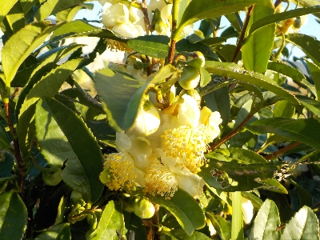
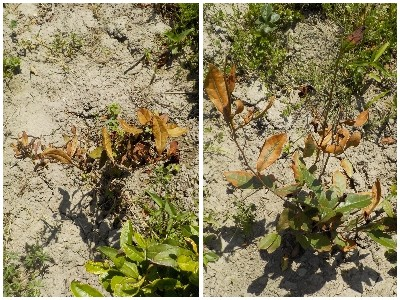
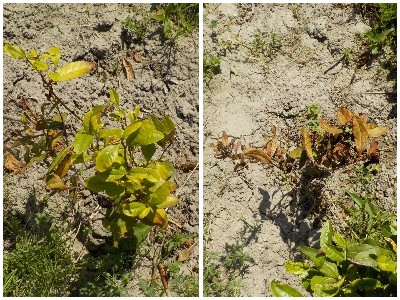
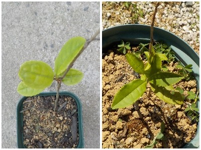

お茶の花が沢山咲いていました。でもお茶の実がありませんでした。
更新日 : 2025/11/23

お茶の花が咲いたので、去年咲いた花が実になってタネが出来る時期なんですが、実がありませんでした。
なんでかなー。実がないので来年は種蒔きが出来ません。
来年は密集して育ってる木を間引いて増やそうと思います。間引いているので増えてはいないか。植え替えしてるだけか。
更新日 : 2025/11/23

お茶の花が咲いたので、去年咲いた花が実になってタネが出来る時期なんですが、実がありませんでした。
なんでかなー。実がないので来年は種蒔きが出来ません。
来年は密集して育ってる木を間引いて増やそうと思います。間引いているので増えてはいないか。植え替えしてるだけか。
更新日 : 2026/05/16


植え替えしてから10日は経っています。木の上部はもう枯れ葉になったものもあります。
これ以上枯れないように、今後は水をまくつもりです。
更新日 : 2026/05/16

去年のチャノキは小さいままです。なんで伸びないんでしょうね？
去年の古い葉っぱが落ちて、新しい葉っぱが出た感じです。
自分で育てたお茶は美味しいんだろうか？。